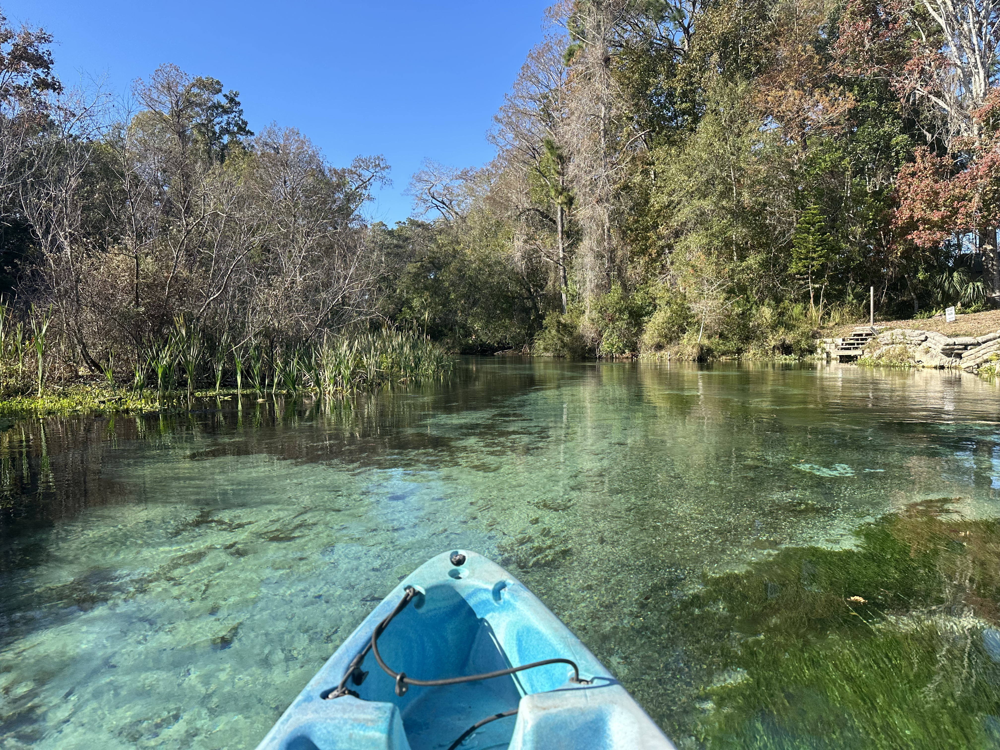
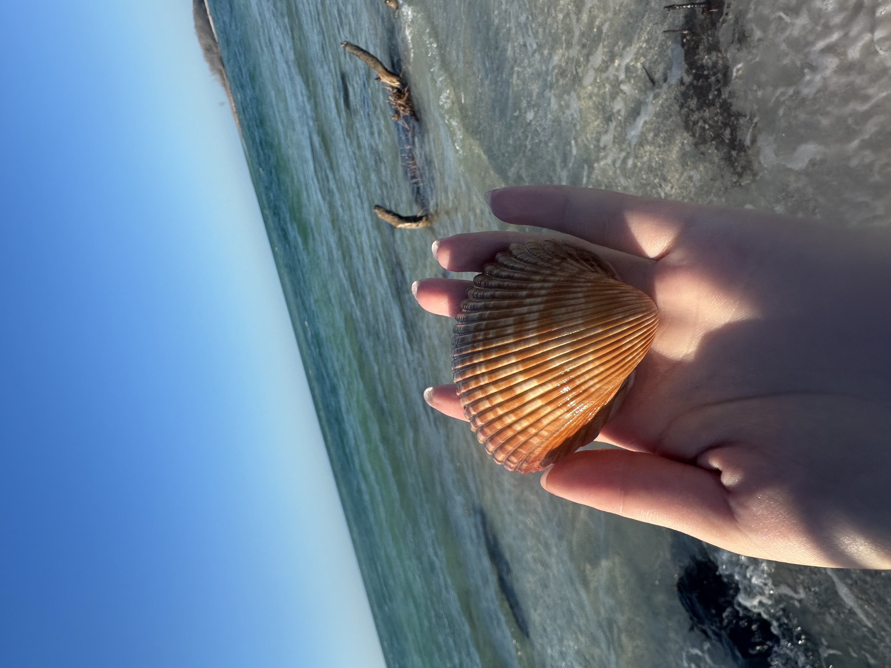

Frontend Design
Structured layouts, readable hierarchy, and responsive interfaces.
CS409 MP1 Portfolio
A CS student who loves exploring new technology, traveling to new places, and capturing everyday moments through photography. Always curious, always trying something new.
View WorkAbout
I’m Xinyi Jiang, a Computer Science student at UIUC who enjoys exploring different sides of technology. I’m particularly interested in AI agents, front-end design, and data analysis — from building systems that can reason and automate tasks, to designing interfaces that feel intuitive, to finding useful stories hidden in data. Outside of CS, I’m usually looking for a new experience. I love rock climbing, photography, skiing, and traveling. I enjoy exploring unfamiliar cities, capturing small moments through my camera, and trying things that challenge me in different ways.
Focus Areas
Structured layouts, readable hierarchy, and responsive interfaces.
Designing intelligent systems that can interact with users in natural ways.
Interpreting complex datasets to uncover patterns and inform decision-making.
Gallery


Perspective
Projects
Video
Rock climbing is one of my favorite ways to reset outside of class. It asks for patience, problem solving, balance, and trust in small decisions, which makes every route feel like a physical puzzle.